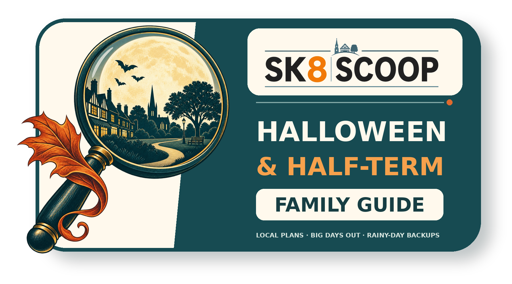

Family guide · October 2026
Halloween & Half-Term
43 useful ideas still listed for Cheadle, Cheadle Hulme, Gatley, Heald Green, Stockport and worthwhile trips across Greater Manchester and Cheshire.
Updated 21 October 2026 · Expired and fully sold-out activities are removed. Filter by price, age, weather and distance, then use the direct organiser link to check availability before setting off.
Plan without the faff
Start with what matters today
This guide brings related sessions together into practical choices, so families can compare dates, cost, age fit, booking and access caveats without seeing the same day out several times. Local options come first; longer trips are included only when they offer something distinctive.
Plan your autumn
Your next dates
Start with the budget
Free & under £10
Make it fit your family
Find your kind of day
More useful calendar
What is happening when?
The upcoming-date calendar updates automatically. For events on selected days, check the organiser’s actual timetable before booking.
Past events are hidden automatically using UK dates. Always check the organiser before travelling.
See the dates on each activity below.
Date warning: the Whitworth’s Afrocats page prints “Tuesday 28–Thursday 30 October”, but those weekdays do not match the 2026 calendar. The 2026 dates remain unconfirmed; check directly before making plans.
Closest useful picks
SK8 & Stockport
The strongest close-to-home options, including five listings with unpublished prices that must be checked during booking.
Easy wider choices
Manchester, Trafford & nearby
Good public-transport or shorter-drive choices, with a strong mix of free museum activities, shows and practical rainy-day options.
Distinctive experiences
Worth the trip
Longer journeys and bigger tickets are retained only where the experience offers something genuinely different.